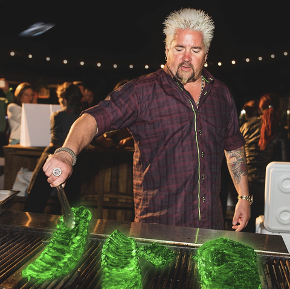

Ribs

Description
Radical, radioactive, radian, remarkable, rich, robust, ravishing ribs
Ingredients
- 2 ½ pounds country style pork ribs
- 1 tablespoon garlic powder
- 1 teaspoon ground black pepper
- 2 tablespoons salt
- 1 cup barbeque sauce
Steps
- Place ribs in a large pot with enough water to cover. Season with garlic powder, black pepper and salt. Bring water to a boil, and cook ribs until tender.
- Preheat oven to 325 degrees F (165 degrees C).
- Remove ribs from pot, and place them in a 9x13 inch baking dish. Pour barbeque sauce over ribs. Cover dish with aluminum foil, and bake in the preheated oven for 1 to 1 1/2 hours, or until internal temperature of pork has reached 160 degrees F (70 degrees C).